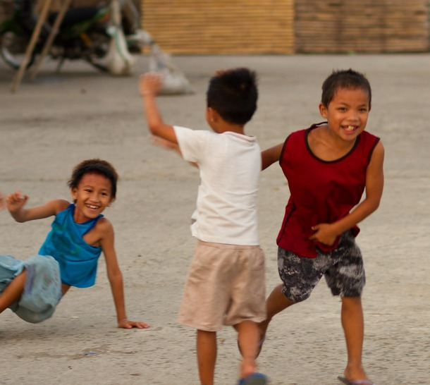

Introduction
Main Content
The host will begin with giving a brief introduction about the topic and sharing his fun and mistakes when he was a kid. Fun and mistakes he had when he was in elementary, elementary school and classroom experiences, and many more. Then finally asking his co-hosts one-by-one. Giving the viewers entertainment and bringing them back to the old days when we didn't care about anything other than having fun and laughing.
Fun and Mistakes as Kids
-

When we were kids, we didn't care about anything but fun, and with fun come mistakes. When we had fun as kids, we made mistakes that made us feel embarrassed. Back then, we felt bad about what happened, but today, it's just another funny memory for us.
https://tinyurl.com/2shmv78d
-

In our schools, we had elementary and high school stories. Stories that are fun to talk about and fun to reminisce. In our stream, we will talk about that and have fun while doing so, giving the viewers endless laughter while having fun ourselves.
https://tinyurl.com/2shmv78d
Funny School Stories
Engagement
For viewer engagement, the main host will ask the viewers their own fun and mistakes as kids, elementary days stories, and many more, depending on the topic the hosts are on. Giving the viewers not only entertainment but also making them feel like they're a part of the stream.
Conclusion
For the conclusion, the main host will take action by staring at the conclusion by saying, "I hope you had fun reminiscing about our experiences and fun when we were kids. I hope that memory will always live in each and every one of you." Then finally asking his co-hosts if they have anything more to say. After that, they will end their stream with a warm farewell to the viewers, leaving them entertained and happy.